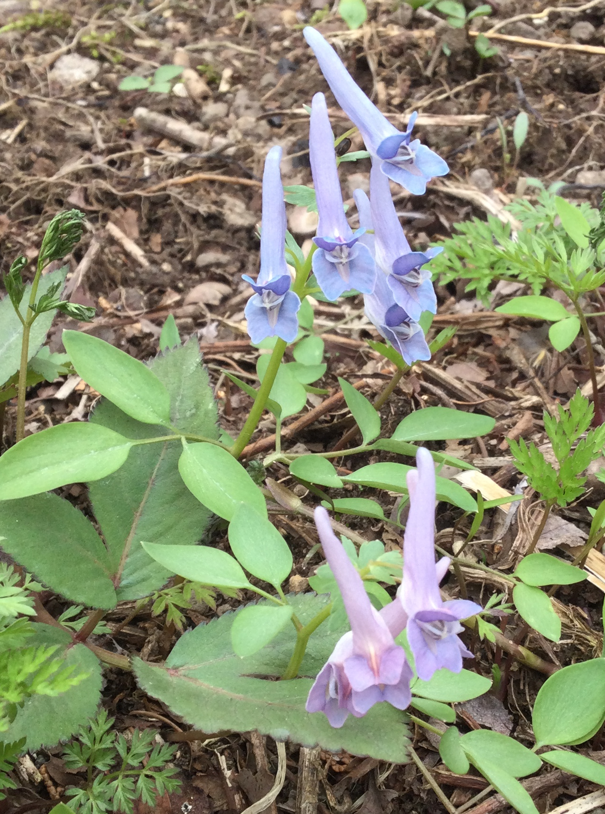

ヤマエンゴサク
1 山延胡索をみつけました
きれいな ヤマエンゴサク （山延胡索）が数カ所に数株ずつまとまっているのを見つけました。 ロケーションは群馬県片品村の標高1,000メートルの場所です。
花の形が「長いトンガリ帽子をかぶったヒトの顔」のようでとてもかわいい。 また少し場所が変わると花の色や葉の形が変わるのがおもしろいです。

図1: ヤマエンゴサク(山延胡索)＠片品村
この花はかなり以前から毎年、同じ場所に咲いていたことを家内から教えてもらいました。 名前でいろいろ検索したところなかなか興味深い性質をもっているんですね。
- 葉の形態や色が 変異しやすい こと
- 根茎には 毒 があるがそれを漢方に使うこともあること
- 野生のシカ が林床植生を破壊してガレ場にしてしまっても、ヤマエンゴサクは生き残る数少ない植物の一つであること（崎尾他, 2013）
最後の点ですが、ヤマエンゴサクは早めに地上部が枯れてしまうために、シカの食害からかろうじて免れているようです(注1)。他の草や木がほとんど食い尽くされても生き残るという 幸運のとんがり帽子 :smile: なお図1 の写真を撮った場所はこれまでシカの襲撃は受けていません。ヤマエンゴサク以外にも希少な山野草を見ることができます。
2 花の名前をしらべるアプリ
「物の名前」って不思議ですよね。 「名前」は大昔から洋の東西を問わずたくさんの哲学者たちの関心をひきつけて来ました。 面白い参考書や文献をリストするだけで何ページにもなります(注2)。 また、ヒトの子どもが事物に固有の名前があることを「生まれつき」知っているかのように 見えるのも興味深い現象です(注3)。
話題を「花」にもどしましょう。
いまはスマホのカメラに対応した便利なアプリがたくさんあります。 つい最近になってすっかりファンになったのが Pl@ntNet というアプリ。
図2: Pl@ntNetのアイコン
主な特長はつぎのとおりです。
- 無料
- 写真から学名（一部は和名）を得ることができる
- 世界中の植物 約27,000種が登録されている
- APIが公開されている
開発主体はフランスの植物科学系の公的な研究施設で、一般の人々から得られる映像データを植物科学の進歩につなげようとする citizen science project です。商売っ気がいっさいないのがさわやかです:clap:
それから 花の名前（基本は学名）を余計な情報4なしで得ることができる点と、 もし自分が撮影した写真が未登録の花だったら、 その花をデータベースに追加登録することによって植物学に「ささやかな貢献」（コントリビュート）ができるという点、 も気に入っています。
ボク自身、1ヶ月未満の新米 Pl@Neter ですが、「フデリンドウ」「キンラン」それからこの「ヤマエンゴサク」をコントリビュートさせてもらっています。
3 Ackknowledgement:
- 崎尾 均, 久保 満佐子, 川西 基博, 比嘉 基紀 (2013). 秩父山地におけるニホンジカの採食が林床植生に与える影響 日本緑化工学会誌, 2013, 39 巻, 2 号, p. 226-231.
- 村岡晋一 (2020). 名前の哲学 講談社選書メチエ, 講談社.
4 Footnotes:
脚注:
野生動物の「人権」を守る運動をしている 動物 愛護団体は内外にたくさんあります。なかには個人攻撃や業務妨害も辞さないというテロリストまがいの過激な集団も（少数ですが）あります。一方、野生 植物 の愛護団体はそれに比べると総じて紳士的でおとなしい。両者の「活動性」の差が行政への影響力の差となって、 結果として北関東の広い範囲で、林床がシカの食害で地肌があらわになるほど荒らされているという事態になったのかもしれません。
村岡晋一 (2020). 名前の哲学 講談社選書メチエ, 講談社.
乳幼児に、ある人工的で新奇な事物を見せて、でたらめな語を教えるというむちゃくちゃな実験が過去にはありました。幼児は「最初の出会いのたった1回の名前付け経験」でその事物とその名前を記憶する可能性があります。子どもを対象とした安直な実験はとても危険です。生涯にわたって影響が残る可能性があります。
花言葉とか誕生花とかの情報が無いという意味です。これらの情報が必要ならば、別途調べれば良いというスタンス。